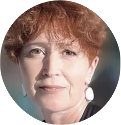

SOFTWARE
Blender 3.2 · Photoshop · Inkscape · Unigraphics NX 5 · Catia 5 · Teamcenter · VisMockup ·
Windchill · Share Point
SPRACHEN
Deutsch - verhandlungssicher
Englisch - gut in Wort & Schrift
Russisch - Muttersprache
Ukrainisch - verhandlungssicher
Französich - Grundkenntnisse
ZERTIFIKATE
Blender - Modeling, Shading, Lighting & Rendering - 2022
Projektmanagement - Methoden und soziale Führungskompetenzen - 2008
DIPLOME
Web-Designerin - 2006
Diplom Ingenieurin - 1987
BERUFSERFAHRUNG
12/2019–05/2022
Senior Design Engineer, Nemak Innovative Lightweighting, Frankfurt (Main)
- Konzeptentwicklung und Optimierung des Gießsystems
- Erstellen von 3D Modellen und 2D Zeichnungenvon PKV Alu-Batteriegehäuseund Subframe
- Konzeptentwicklung zur FunktionsintegrationvonLowcar Structure /front and -rear/
- Erstellung technischer Dokumentation, Pflege der Sharepoint-Seiten des Unternehmens
- Datenbankbetreuung /Windchill/
03/2011–08/2019
Designing Engineer, Adam Opel AG, Rüsselsheim
-
Designing Engineer in der Abteilung "Virtual Vehicle Development and Product Lifecycle
Management"
- Koordination und Qualitätsmanagement von digitalen Produktdesign GM Engineering
- Datenbankbetreuung / Teamcenter
- Erstellung technischer Dokumentation
- Pflege der Sharepoint-Seiten des Unternehmens
- Vechicle Assembly Srtucture (VAS) Training für Ingenieure
03/2010–02/2011
Projektingenieurin, elektrische Subsysteme, Inform GmbH, Rüsselsheim
- Vorausentwicklung von Elektrischen Subsystemen und Komponenten
- Vorausentwicklung von Elektrischen Subsystemen und Komponenten
- Erstellen 3D Modellen und 2D Zeichnungen von Kabelkanälen, Haltern u.Ä.
- Teilnahme an dentechnical review
- PackageUntersuchungvon elektrische Subsysteme
- FEM/Digital Simulation/Untersuchung, Erstellung einer Methodik für die Abteilung
- Projektmanagement undKundenbetreuung
11/2006–06/2009
CAD Konstrukteurin, RLE Rhein Main GmbH, Rüsselsheim
- Erstellen von 3D Modellen und 2D Zeichnungenvon Chassis und Thermal HVAG Komponenten
- Reverse Engineering für die Simulation
- Projektabwicklung und Kundenbetreuung
05/1992–09/2002
Grafikdesignerin, Computer Multimedia Systems LLC GmbH, Ukraine
- Erstellen von 3D-Flugzeugmodellen für Computerspiele und 2D Grafik-Clipart Sammlungen
- Erstellen von 3D Animationen in 3D Studio MAX und 2D Adobe Flash Animationen
08/1998–02/1992
Fertigungsingenieurin, Elektronikunternehmen Terminal, Ukraine
- Konzepterstellung von Nichtstandartgerechte Ausstattung für Chemische Abteilung
- Anfertigung von Ersatzteilen/Hilfsmittel für Chemische Abteilungund Montageband
BILDUNGSWEG
05/2022–08.2022
Future Training@Consulting GmbH, Berlin
- Modeling low@polygonale Objects, Prozedurale Modelirung, Sculpting, Addons
- UV Unwrapping, Prozedurale Texturen, HDRI Maps, Shader Editor, Rendering: Eevee, Cicles
03/2005–12/2006
Web–Designerin, SGD Private Fernhochschule, Darmstadt
- Organisation von Webdesign-Projekten
- Websitenentwicklung
08/1982–05/1987
Diplom Ingenieurin, Technische Universität, Winniza, Ukraine
- Technologie der Maschinenbau, Metallbearbeitende Werkbänke
- Design von Maschinenteilen
05/1982
Abitur am Gymnasium, Winniza, Ukraine